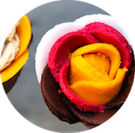
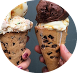
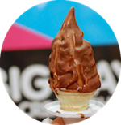
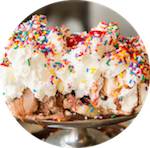
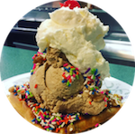
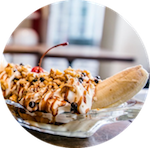
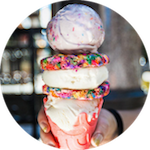
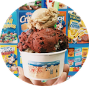
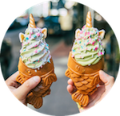
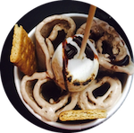

INFORMATION
Amorino
This restaurant delights connoisseurs around the world with the finest quality artisanal gelato, churned daily according to traditional Italian methods. They use fresh free range, organic eggs and the highest grade whole milk in the gelato.
Ample Hills This chain was born in Brooklyn in the spring of 2011 to entrepreneurs Brian Smith and Jackie Cuscana. The couple began creating ice cream and baked goods from scratch, including original flavors. Ample Hills has grown rapidly, expanding to nine locations in New York City, one in Disney World and now, a new store coming to New Jersey.
Big Gay Ice Cream Big Gay Ice Cream is a New York City-based company that started with an ice cream truck and now operates two New York City store fronts. They specialize in serving soft serve ice cream cones, cups, and novelties with a menu of unique and unusual flavors and toppings.
Eddie's Forest Hills’ old-school ice cream parlor opened its doors in 1925 and has been Eddie’s Sweet Shop since 1967. This family-owned spot will remind you of the past. Pull up a cast-iron swivel stool to sit on while you order up a dish of one of the shop’s nearly 20 homemade ice cream flavors.
Egger's Serving scoop by scoop to the Staten Island community since 1932, Egger’s Ice Cream Parlor is a Staten Island staple. This old-fashioned fixture for housemade ice cream, candy & frozen treats such as banana splits is must see.
Eggloo Eggloo is a boutique dessert shop that reinvents your dessert experience through unconventional flavors and unique combinations. They combine bizzare Asian Fusion flavors with ingredients to bring you something new.
Oddfellows This Dumbo shop features 12 rotating flavors of ice cream, sorbet, soft serve, and beer, wine, & cider! Join us for scoops, soft serve, splits, sundaes, and our new Carousel Sundae - as well as beer and sparkling wine floats, boozy slushies and milkshakes, and more.
Ice & Vice This is an experimental ice cream shop. Handcrafting our ice cream, sorbet and frozen yogurt in small, customized batches, we push the boundaries of what frozen desserts can be. Always edgy and always ultra-premium, we serve up quality and vice with every scoop.
Max & Minas Max and Mina's Ice Cream revolutionized America's favorite dessert with daring ingredients and bold innovation. They remix mundane flavors that have drawn unbelievable attention around the globe.
Taiyaki NYC Here the ice cream and taiyaki waffles are made from the highest quality ingredients. The Taiyaki waffles are made fresh on-site, and soft serve ice cream is produced and churned in small batches.
Ten Below In the heart of Chinatown, this shop is turning liquid cream to ice cream in under two minutes. Using an advanced cold plate that reaches well below -10°F, the ice cream produces smaller ice molecules to make it smoother and creamier.









